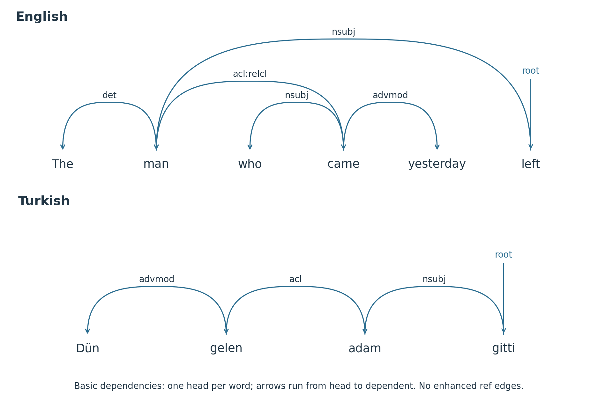
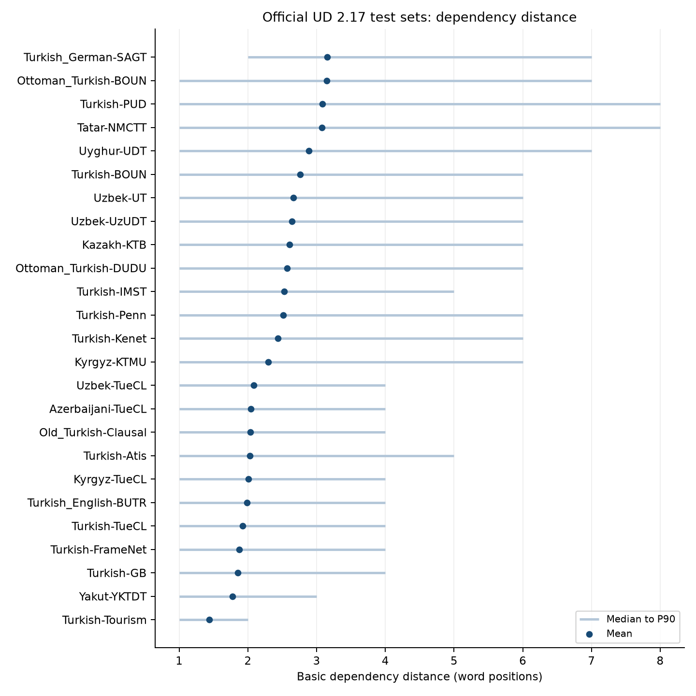

8 Syntactic Structure and Universal Dependencies
After reading this chapter, you will be able to:
- Explain why English-style positional shortcuts are unreliable for Turkic languages and which signals (position, morphology, lexical selection, context) parsers combine instead
- Describe the role of participial relative clauses in creating long-distance dependencies
- Summarise the Universal Dependencies framework and identify the Turkic-specific annotation choices it leaves open
- Use the UD 2.17 inventory to identify Turkic treebanks and release-specific gaps
- Contrast transition-based and graph-based (biaffine) dependency parsing and reason about their fit with SOV languages
- Design and evaluate a zero-shot cross-lingual parsing pipeline for a Turkic language with no treebank
- Plan the construction of a new Turkic treebank, from sentence selection and pre-annotation to validation and release
This chapter examines how Turkic words combine into sentences and how Universal Dependencies (UD) represents that structure. The main topics are case-marked arguments, flexible word order, omitted subjects and participial clauses. Parsers must use these cues together; position alone is insufficient.
The chapter then surveys the UD 2.17 treebanks, explains dependency parsing and compares documented parser results. The final sections cover transfer and the construction of a new treebank. Throughout, annotation conventions matter: two treebanks can assign different heads or labels to the same kind of construction.
8.1 A Computational Sketch of Turkic Syntax
8.1.1 Case-Marked Arguments and Word Order
English declarative clauses often place the subject before the verb and the object after it. These are useful cues, but English parsers also need lexical, morphological and contextual information.
Turkish makes this strategy unreliable. Consider the sentence Ali kitabı okudu (“Ali read the book”). The canonical, rhetorically neutral order is subject–object–predicate, and scrambling rearranges it for pragmatic purposes, for example to object–subject–verb or verb–subject–object (Johanson 2021, sec. 56.3, pp. 935–936). With an accusative-marked object, all six permutations of subject, object and verb can be used in a suitable discourse situation (Hoffman 1994, 117). This does not mean that every sentence permutes freely: orders other than SOV are marked, and order is more rigid in subordinate than in main clauses (Johanson 2021, 936):
| Order | Turkish | Status |
|---|---|---|
| SOV | Ali kitabı okudu | neutral, default |
| OSV | kitabı Ali okudu | marked; context-dependent |
| SVO | Ali okudu kitabı | marked; context-dependent |
| OVS | kitabı okudu Ali | marked; context-dependent |
| VSO | okudu Ali kitabı | marked; context-dependent |
| VOS | okudu kitabı Ali | marked; context-dependent |
The family-wide pattern also has exceptions. Johanson describes contact-induced verb-medial order in Gagauz, Karaim and Cypriot Turkish (Johanson 2021, 936). The Turkish table is therefore not a word-order rule for every variety.
How often each order occurs in edited text is measured in Exercise 1: among BOUN training sentences whose root has an overt subject and an overt object, 87.1% are SOV, followed by OSV (6.7%), OVS (3.3%) and SVO (2.5%); VSO and VOS occur three times in 957 sentences.
The accusative suffix -ı identifies kitabı as the direct object in each order. The unmarked Ali is the subject, identified here by verbal agreement and the accusative marking on the other argument. Lack of a suffix alone would be insufficient: non-specific objects can also be unmarked, and possessive -ı/-i can resemble the accusative. Word order contributes both grammatical and pragmatic information, including topic, focus and backgrounding. An SVO shortcut would mislabel some of these reordered arguments.
To test whether explicit morphology helps, compare the same parser with and without predicted features. A contextual encoder may already recover some of this information from word forms.
8.1.2 Scrambling and Information Structure
The reordering illustrated in Table 8.1 is not random. It follows regular principles of information structure: what is topical (given information, often fronted), what is focused (new or contrastive information, often immediately pre-verbal in Turkish), and what is backgrounded (often after the verb) (Johanson 2021, sec. 56.4, pp. 937–949; Hoffman 1994, 117).
A transferred model must account for these links between discourse role and position. A sentence-initial topic in Turkish may be a subject, object or adjunct. The constituent immediately before the verb often carries focus, whatever its grammatical role.
This matters concretely for tasks like machine translation (where reordering must preserve pragmatic meaning, not just grammatical structure), sentiment analysis (where focus-marked constituents carry heightened emphasis), and information extraction (where the topic is often what the sentence is about, not what the syntax labels as subject).
8.1.3 Pro-Drop: The Absent Subject
Turkic languages generally allow a referential subject pronoun to be omitted when its referent is recoverable, though the conditions and frequency vary by language and discourse (Johanson 2021, sec. 54.7, pp. 851–853). In Turkish main clauses null subjects are much more frequent than overt ones, whereas Uyghur and Yakut use anaphoric pronouns more often (Johanson 2021, 851–52). Agreement constrains person and number; it does not identify an antecedent or encode grammatical gender. Turkish Okudu can mean “he/she/it read” in context, with third-person singular verbal agreement.
An overt pronoun may still be used for contrast or topic shift. Exercise 3 measures subject omission under an explicit eligibility definition rather than treating every missing subject arc as pro-drop. In the IMST training set, 43.8% of finite, active, non-imperative verbal predicates have an overt subject: 56.9% in the third person but only 13.5% in the first and 15.1% in the second, where the agreement suffix marks person and number, but does not identify the referent.
Pro-drop creates several downstream problems:
Coreference resolution must track implicit subjects. A system that only links overt mentions needs an additional representation for implicit subjects.
Machine translation into languages such as English, French or German often needs an overt subject where the Turkic source omits one. Choosing a pronoun or noun phrase requires the referent to be recovered from agreement and discourse context. A target pronoun may also require a gender distinction absent from the source verb.
Syntactic annotation must decide how to represent the absent subject. Universal Dependencies handles this by recording person and number in the verb’s FEATS column and leaving no subject arc in the parse graph when no overt subject is present.
8.1.4 Participial Relative Clauses: The Pre-Nominal Clause
Prenominal participial clauses differ from the relative-clause pattern illustrated by the English example below. In English, a relative clause follows the head noun. It may begin with a relative pronoun (who, which) or marker (that), though some relatives have no overt marker:
the man who came yesterday
In Turkish, the relative clause precedes the head noun, contains no complementiser, and marks clause type on the verb with a participial suffix rather than a separate word:
dün gelen adam yesterday come.PTCP man “the man who came yesterday”
The participial form gelen (come.PTCP) is a non-finite verbal form that modifies adam (“man”) directly. When the relative clause is complex, with its own arguments, adjuncts and embedded clauses, the entire structure builds to the left of the head noun:
[Atatürk’ün 1928’de başlattığı] dil reformu Atatürk-GEN 1928-LOC begin-CAUS-NMLZ-POSS.3 language reform-POSS.3 “the language reform [that Atatürk started in 1928]”
(The -u on reform-u is the possessive marker of the Turkish noun compound dil reform-u, not an accusative.) Figure 8.1 shows the two constructions as dependency trees.

Three distinctions matter for parsing:
Where the long arcs are. Three different distances are easy to confuse:
- Clause width: how many words the relative clause spans (Atatürk’ün 1928’de başlattığı: three words).
- Dependent-to-participle distance: how far the clause’s own dependents are from the participle that heads them (başlattığı → Atatürk’ün: two positions; başlattığı → 1928’de: one).
- Participle-to-noun distance: how far the participle is from the noun it modifies. The participle is normally the last word of the relative clause, so this edge is short whatever the clause width: reformu → başlattığı (
acl) spans two words here, with only the compound modifier dil in between.
A wide relative clause can still have a short participle-to-noun edge. Long arcs may instead connect the participle to an early dependent, or the sentence-final main verb to the subject phrase. Turkic heads usually follow their dependents, with exceptions such as postverbal constituents and some coordination structures. A left-to-right transition-based parser must therefore keep dependents on its stack until their head appears. Throughout this chapter, arrows run from head to dependent.
Clause-boundary cues. The Turkish construction uses a participial suffix where the English example has a relative pronoun. A parser can use a morphological analyser or learn this cue from word representations; an explicit analysis is not required by every architecture.
Left-branching accumulation. A Turkic noun phrase can contain several participial modifiers before its head noun. Each clause may also contain embedded clauses, creating a long sequence before the noun. Exercise 2 measures these sequences in BOUN training data. For nouns that head a participial clause, the median number of preceding words is 4 in biographical, instructional and popular-culture text, 5 in essays and 6 in news. The 90th percentiles range from 10 to 13 words; the maximum is 75.
Despite these long examples, the median participial clause in these samples is shorter than the median relative clause in EN-EWT: 4 versus 6 words. Its participle is also usually adjacent to the noun, with a median distance of 1, compared with 3 for English acl:relcl.
8.1.5 Postpositions and the Case-Postposition System
Turkic languages use postpositions, which follow rather than precede the noun phrase. A postposition selects a specific case on its nominal complement. For example, Turkish için (“for”) takes the nominative with nouns (but the genitive with most pronouns: benim için “for me”); sonra (“after”) takes the ablative; göre (“according to”) takes the dative. The case suffix is carried by the nominal, not by the postposition.
Some dependency traditions treat the postposition as the head of its phrase, but UD does not. In UD, the nominal is the head of an ordinary adpositional phrase. The postposition attaches to the nominal with case; the nominal’s external relation depends on the construction. Its morphological case and the postposition’s identity jointly help identify that construction. For example, in Ali için geldim (“I came for Ali”):
geldim --obl--> Ali
Ali --case--> içinThe verb geldim is the root; Ali attaches to it as obl; için attaches to Ali as case. Inside a noun phrase the nominal would attach as nmod instead of obl.
8.2 The Universal Dependencies Framework for Turkic
8.2.1 UD’s Core Representational Choices
Universal Dependencies (Marneffe et al. 2021; Nivre et al. 2016) represents basic syntax as directed arcs from heads to dependent syntactic words. These need not coincide with orthographic tokens: CoNLL-U can use a range ID for a multiword token and integer IDs for its component words. UD v2 defines 37 universal relations; labels such as acl:relcl are subtypes, not additional universal relations. The root word is encoded with HEAD=0 and DEPREL=root, where 0 is the artificial root (CoNLL-U specification).
Each word has a universal POS tag (UPOS), an optional language-specific POS tag (XPOS), and morphological feature–value pairs (FEATS). For illustration, a finite verb might have Mood=Ind|Number=Sing|Person=3|Tense=Past|VerbForm=Fin. A participle may carry VerbForm=Part, tense and possessor agreement; a case feature is appropriate only if that form is actually case-inflected. The exact bundle must follow the language and treebank guidelines.
Table 8.2 lists the morphological features most heavily used in Turkic UD treebanks.
| Feature | Values (sample) | Notes |
|---|---|---|
| Case | Nom, Acc, Dat, Loc, Abl, Gen | Selected values; inventories differ by language |
| Number | Sing, Plur | Dual absent in most modern Turkic |
| Person | 1, 2, 3 | Verbal agreement; possessor features use the [psor] layer |
| Tense | Past, Pres, Fut | Interacts with Aspect and Mood |
| Aspect | Perf, Imp, Prog | Not always distinguished from Tense in UD |
| Mood | Ind, Cnd, Opt, Imp, Pot, Nec | Indicative, conditional, optative, imperative, potential (ability), necessitative |
| Voice | Act, Pass, Cau, Rcp, Rfl | Voice categories (and their combinations, e.g. CauPass) |
| VerbForm | Fin, Part, Conv, Vnoun | Finite, Participial, Converbal, Verbal noun |
| Polarity | Neg | Morphological negation on verbs |
| Number[psor], Person[psor] | Sing/Plur; 1/2/3 | Possessor agreement on nominals |
8.2.2 Turkic-Specific Annotation Decisions
The UD guidelines specify the representation for many common constructions but leave certain language-specific cases to individual treebank documentation. Several of these are common in Turkic text.
Light verb constructions. Turkish and other Turkic languages frequently form complex predicates from a nominal and a light verb: okuma yaptı (“did reading” = “read”), yardım etti (“did help” = “helped”). In the documented UD analysis the light verb is the head and the nominal is its dependent with compound:lvc:
etti --compound:lvc--> yardımThis matches the Turkish UD relation documentation, but the released data need to be checked independently. In UD 2.17, examples of yardım et- in BOUN (news_578), IMST (00170166_6) and PUD (n01134015) have the opposite head direction: the noun yardım heads the verb with compound:lvc (sentence IDs and POS tags in tables/tbl-ud217-inventory/light-verbs.csv). Table 8.3 shows how systematic the convention is: the pattern holds well beyond a few stray examples. In BOUN, IMST, PUD and the two Ottoman Turkish treebanks, nearly every compound:lvc arc runs from the nominal to a light verb on its right. In the Turkish and Azerbaijani TueCL sets, in Kazakh-KTB, Tatar-NMCTT and the Uzbek treebanks the verb is the head, as the documentation describes.
compound:lvc in the official UD 2.17 Turkic treebanks (all splits pooled; treebanks with no such arc omitted). “Nominal head” means any head whose UPOS is not VERB or AUX, so the light verb depends on the noun or adjective. Counts are an annotation-convention diagnostic, not a parser result. Generated by tables/tbl-ud217-lvc-direction/generate.py from hash-verified release files; URLs and hashes are in data.csv.
| Treebank (all splits) | compound:lvc arcs |
Verb/AUX head | Nominal head | Dependent before head |
|---|---|---|---|---|
| Azerbaijani-TueCL | 17 | 17 | 0 | 17 |
| Kazakh-KTB | 7 | 7 | 0 | 7 |
| Kyrgyz-TueCL | 2 | 2 | 0 | 2 |
| Ottoman Turkish-BOUN | 248 | 2 | 246 | 0 |
| Ottoman Turkish-DUDU | 905 | 1 | 904 | 14 |
| Tatar-NMCTT | 36 | 36 | 0 | 36 |
| Turkish-BOUN | 1,265 | 29 | 1,236 | 0 |
| Turkish-IMST | 523 | 16 | 507 | 0 |
| Turkish-PUD | 201 | 1 | 200 | 0 |
| Turkish-TueCL | 5 | 5 | 0 | 5 |
| Turkish German-SAGT | 94 | 94 | 0 | 94 |
| Uyghur-UDT | 268 | 244 | 24 | 263 |
| Uzbek-TueCL | 15 | 15 | 0 | 15 |
| Uzbek-UT | 215 | 213 | 2 | 211 |
| Uzbek-UzUDT | 21 | 20 | 1 | 18 |
Neither direction is a grammatical fact about Turkish: both are annotation conventions for the same construction, and a parser trained on one learns that convention. A relation name alone is therefore insufficient: compare heads, labels, POS tags and the relevant construction before pooling treebanks or comparing scores across them.
Postposition attachment. As in Section 8.1, the nominal heads the phrase and the postposition attaches to it with case. The nominal itself is attached as obl when the phrase modifies a predicate and as nmod when it modifies a nominal. The nominal carries the case selected by the postposition, which gives partly redundant information for semantic interpretation.
Pro-drop representation. When the subject is omitted, no subject arc appears in the parse graph. The verb’s FEATS column records Number=Sing|Person=3 (or whatever the morphological agreement is), providing information about the absent subject. Basic UD does not introduce empty words for omitted subject pronouns, regardless of language. Enhanced dependencies and empty nodes for ellipsis are a separate representation, not a Turkic-specific exception.
Possessive-existential clauses. One common Turkic possession construction combines a genitive possessor, a possessive suffix and an existential predicate. In the recurring Kyrgyz sentence Менин машинам бар ‘I have a car’ (Kyrgyz-KTMU 001, Table 1.4), the possessor Менин attaches to машинам with nmod, машинам is the nsubj of бар, and бар is the root:
бар --nsubj--> машинам --nmod--> МенинOther analyses of the same release are defensible; this is one of them. Treebanks differ in the part of speech they give the existential (бар, Turkish var), in whether the possessor is nmod or nmod:poss, and in what they treat as the head of a predicate without a verb; consult the documentation of the treebank you train on. The same release also tags машинам Case=Gen and бар VERB with Aspect=Perf|Tense=Pres, although машинам has no genitive suffix and бар carries no tense or aspect morphology (Section 5.4.4). These feature values look like annotation errors rather than a convention. Check features as well as relations before training on, or teaching from, a treebank.
Converb (gerund) clauses. Turkish and related languages use forms such as -arak, -ıp, -ken and -ınca in adverbial clauses. In this use, the converbal verb attaches to the main predicate with advcl, and its own arguments attach to it. Converbs also occur in clause chains and auxiliary constructions (Kazakh оқып жатыр ‘is reading’, where the treebank may treat жатыр as aux of the converb), so the form alone does not determine the dependency relation.
Coordinated verb phrases. In Turkic, coordinated clauses often share the subject and other arguments, with only the final verb fully inflected, and non-final verbs in a converbal or other non-finite form. UD coordination normally attaches later conjuncts to the first conjunct with conj, not to the final fully inflected verb. Whether a non-final converb is analysed as a conjunct at all, or as an advcl of the final verb, is a treebank-level decision that differs between Turkic treebanks; check the guidelines of the treebank you train on.
8.2.3 Descriptive gold-arc diagnostics
The official UD 2.17 test files support a reproducible descriptive check without training a parser. Table 8.4 and Figure 8.2 use basic heads over integer-ID syntactic words. They exclude root arcs and arcs whose dependent is PUNCT, while retaining punctuation positions when measuring distance. Multiword-token headers and empty nodes are excluded. The generator checks every input against the inventory’s SHA-256 manifest.
| Treebank | Sentences | Arcs | Mean | Median | P90 |
|---|---|---|---|---|---|
| Azerbaijani-TueCL | 148 | 582 | 2.04 | 1 | 4 |
| Kazakh-KTB | 1,047 | 6,978 | 2.61 | 1 | 6 |
| Kyrgyz-KTMU | 1,222 | 8,965 | 2.30 | 1 | 6 |
| Tatar-NMCTT | 148 | 1,764 | 3.07 | 1 | 8 |
| Turkish-BOUN | 979 | 9,205 | 2.76 | 1 | 6 |
| Turkish-IMST | 1,100 | 6,999 | 2.53 | 1 | 5 |
| Uyghur-UDT | 900 | 7,386 | 2.89 | 1 | 7 |
| Uzbek-UT | 500 | 4,570 | 2.66 | 1 | 6 |

The complete CSV also records counts and distance sums for acl and its subtypes. That label alone does not identify all and only participial relative clauses: Exercise 2 selects participial modifiers as acl arcs whose dependent has VerbForm=Part. These counts are not parsing accuracy.
8.3 Turkic Treebanks
8.3.1 Turkish in UD 2.17
This inventory is pinned to UD 2.17, rather than mixing live statistics with older paper counts. It was regenerated from the official release-tag CoNLL-U files. The local training directory also contains derived data; those additions are excluded. The source URLs and SHA-256 hashes are saved under tables/tbl-ud217-inventory/.
tables/tbl-ud217-inventory/generate.py; file hashes are recorded alongside the CSV. A zero means no sentences in that split. Word and token totals sum all splits; multiword-token ranges count once in the token total, and empty nodes count in neither. Historical and code-switched treebanks retain their UD language names.
| Treebank | Train sentences | Dev sentences | Test sentences | Syntactic words | Orthographic tokens |
|---|---|---|---|---|---|
| Turkish-Atis | 4,274 | 572 | 586 | 45,907 | 45,907 |
| Turkish-BOUN | 7,803 | 979 | 979 | 125,212 | 121,835 |
| Turkish-FrameNet | 2,288 | 205 | 205 | 19,223 | 19,223 |
| Turkish-GB | 0 | 0 | 2,880 | 17,177 | 16,803 |
| Turkish-IMST | 3,435 | 1,100 | 1,100 | 58,096 | 56,422 |
| Turkish-Kenet | 15,398 | 1,646 | 1,643 | 178,658 | 178,658 |
| Turkish-PUD | 0 | 0 | 1,000 | 16,881 | 16,535 |
| Turkish-Penn | 14,850 | 622 | 924 | 183,555 | 183,555 |
| Turkish-Tourism | 15,473 | 2,166 | 2,191 | 91,152 | 91,152 |
| Turkish-TueCL | 0 | 0 | 148 | 904 | 883 |
Related resources include Ottoman Turkish and Turkish–German and Turkish–English code-switched treebanks, listed separately below.
For general edited and web text, TR-BOUN offers several genres and carefully documented Turkish annotation decisions (Türk et al. 2022). Size alone favours other treebanks: TR-Kenet and TR-Penn contain more words, and TR-Tourism more sentences (Table 8.5). Choose according to the evaluation domain; tourism reviews or flight queries may call for a matching domain-specific treebank.
TR-IMST matters for the comparisons below because it supplies the Stanza checkpoint’s training data. TR-PUD belongs to the Parallel UD (PUD) collection, which annotates the same 1,000 sentences in many languages.
Annotation differs between Turkish treebanks in the treatment of light verb constructions (Table 8.3), copulas and complex predicates. Researchers combining multiple treebanks should verify that these constructions are handled consistently before pooling training data.
8.3.2 Other Turkic Treebanks
tables/tbl-ud217-inventory/generate.py; file hashes are recorded alongside the CSV. A zero means no sentences in that split. Word and token totals sum all splits; multiword-token ranges count once in the token total, and empty nodes count in neither. Historical and code-switched treebanks retain their UD language names.
| Treebank | Train sentences | Dev sentences | Test sentences | Syntactic words | Orthographic tokens |
|---|---|---|---|---|---|
| Azerbaijani-TueCL | 0 | 0 | 148 | 912 | 902 |
| Kazakh-KTB | 31 | 0 | 1,047 | 10,536 | 10,495 |
| Kyrgyz-KTMU | 1,308 | 0 | 1,222 | 24,128 | 24,128 |
| Kyrgyz-TueCL | 0 | 0 | 173 | 1,250 | 1,214 |
| Old Turkish-Clausal | 0 | 0 | 20 | 158 | 158 |
| Ottoman Turkish-BOUN | 114 | 0 | 400 | 8,851 | 8,834 |
| Ottoman Turkish-DUDU | 20 | 0 | 1,762 | 17,125 | 16,728 |
| Tatar-NMCTT | 0 | 0 | 148 | 2,280 | 2,280 |
| Turkish English-BUTR | 0 | 0 | 51 | 393 | 393 |
| Turkish German-SAGT | 578 | 801 | 805 | 37,227 | 36,934 |
| Uyghur-UDT | 1,656 | 900 | 900 | 40,236 | 40,236 |
| Uzbek-TueCL | 0 | 0 | 148 | 939 | 939 |
| Uzbek-UT | 0 | 0 | 500 | 5,930 | 5,930 |
| Uzbek-UzUDT | 483 | 0 | 198 | 7,542 | 7,542 |
| Yakut-YKTDT | 0 | 0 | 299 | 1,460 | 1,459 |
A treebank that ships only a test split can be used for evaluation. Training on that split is ruled out. Sizes and split availability differ substantially, motivating multilingual training (Section 8.4) and cross-lingual approaches (Section 8.5). The release uses the name Old Turkish–Clausal; historical resource names in older publications should not be treated as additional released treebanks.
8.3.3 Languages Without Treebanks
In the pinned UD 2.17 inventory (check newer releases before starting a project), many Turkic languages have no UD treebank, among them Turkmen, Bashkir, Chuvash, Crimean Tatar, Gagauz, Nogai, Karachay-Balkar, Tuvan, Khakas, Shor, and Altai. Karakalpak and Kumyk have sentences in the in-progress UD-Turkic parallel collection but no released treebank yet. For the treebank-less languages, the routes to dependency parsing are multilingual or cross-lingual transfer, silver treebanks, and annotation projection (Section 8.5). In the long run, the route is to build a treebank (Section 8.6).
8.3.4 The UD-Turkic Parallel Treebanks
The UD-Turkic initiative addresses cross-lingual comparison directly. Akhundjanova et al. (2025) annotated the same 148 sentences, grammar-style examples of core constructions, in Azerbaijani, Kyrgyz, Turkish, and Uzbek, released as the TueCL treebanks in UD 2.16. In UD 2.17 the Kyrgyz file has grown to 173 sentences (Table 8.6), so compare the languages on shared sentence IDs. Files for Kazakh, Uyghur, Tatar, Karakalpak, Kumyk, and Sakha are in progress in the initiative’s repository (github.com/ud-turkic/parallel).
These treebanks chiefly support comparison and evaluation. Their parallel content lets researchers compare how annotators handle participial clauses, light verbs, copulas and coordination, and develop shared Turkic annotation guidelines. They also supply manually annotated test sets. TurkicNLP evaluates parsers on ten languages using the released sets and the in-progress files (Section 8.4).
8.4 Dependency Parsing for Turkic
8.4.1 Transition-Based Parsing
Transition-based dependency parsing (Jurafsky and Martin 2024, chapter “Dependency Parsing”) processes the input sentence left to right, maintaining a stack of partially built structure and a buffer of unprocessed words. In the arc-standard system, each step applies one of three actions, where \(s_0\) is the top of the stack and \(s_1\) the item beneath it: shift (move the next word from the buffer onto the stack); left-arc (make \(s_0\) the head of \(s_1\), a leftward arc \(s_0 \rightarrow s_1\), and pop \(s_1\)); or right-arc (make \(s_1\) the head of \(s_0\), a rightward arc \(s_1 \rightarrow s_0\), and pop \(s_0\)). In a head-final sentence most arcs are built by left-arc, after the head has been shifted.
Early data-driven Turkish parsers included MaltParser, which Eryiğit, Nivre, and Oflazer (2008) applied to inflectional groups: the subword units between derivational boundaries. Arc-standard decoding takes a linear number of transitions, with encoder and search costs counted separately. In an SOV sentence, the parser holds the subject and object on its stack until the main verb arrives. Long participial clauses can deepen that stack and increase opportunities for early errors to propagate.
Modern transition-based parsers can score transitions with a bidirectional LSTM or transformer that has already read the whole sentence, including the final verb. Greedy decoding can still propagate errors; beam search keeps alternatives. With contextual encoders, transition-based and graph-based parsers show similar accuracy and error profiles (Kulmizev et al. 2019).
8.4.2 Graph-Based (Biaffine) Parsing
Graph-based parsing (Dozat and Manning 2017) takes a different approach: encode the entire sentence at once, then score all possible dependency arcs globally. Biaffine graph-based parsers are among the most widely used architectures for high-accuracy dependency parsing, including the Stanza parser (Qi et al. 2020).
The architecture proceeds in three stages:
1. Contextual encoding. A bidirectional LSTM or transformer encoder processes the full sentence and produces a contextual representation for each token. The encoder sees the entire sentence, including the verb at the end, before any attachment is scored. (Transition-based parsers can use the same kind of encoder; the difference lies in how attachments are decided, not in what the encoder sees.)
2. Biaffine arc scoring. For each ordered pair of tokens \((i, j)\), compute an arc score: \[s_\text{arc}(i, j) = {h_j^{(\text{head})}}^{\top} U \, h_i^{(\text{dep})} + {h_j^{(\text{head})}}^{\top} u\] the score for word \(j\) being the head of word \(i\), where \(h_i^{(\text{dep})}\) and \(h_j^{(\text{head})}\) are learned dependent and head representations derived from the encoder output (via separate MLPs), \(U\) is a bilinear weight matrix and \(u\) an affine term that captures how likely word \(j\) is to take dependents at all (Dozat and Manning 2017). Implementations differ in the exact affine terms. A separate biaffine classifier scores the dependency label for each arc.
3. Maximum spanning tree decoding. A common non-projective decoder finds a maximum spanning tree from arc scores with Chu–Liu/Edmonds, with root constraints, then assigns labels to the chosen arcs. Other implementations may score labelled arcs jointly or use projective decoding; the biaffine scorer alone does not determine the decoder. Because the tree is chosen globally, a long arc (say, from the sentence-final verb back to a subject that contains a wide relative clause) is scored directly rather than built after a sequence of earlier greedy decisions.
Stanza (Qi et al. 2020) provides BiLSTM-based biaffine parsers for Turkic UD treebanks. Its 1.11.0 model catalogue, used for the measurements in this chapter, covers five Turkic languages: Turkish, Kazakh, Kyrgyz, Uyghur, and Ottoman Turkish (plus Turkish–German code-switching). The 1.15.0 catalogue adds an Uzbek (UzUDT) model and a second Ottoman Turkish model (DUDU). TurkicNLP uses Stanza’s own models for the first four languages, adds its own Stanza models for Azerbaijani, Uzbek, Turkmen, Tatar, and Bashkir (trained on silver treebanks where no UD data existed), and provides a multilingual biaffine parser on a frozen Glot500 encoder. That parser is trained on ten languages and covers 15, five of them zero-shot (Hakimov 2026).
8.4.3 Hard Cases for Turkic Parsers
Evaluation on Turkic UD treebanks reveals consistent difficult constructions:
Long arcs around participial clauses. As described in Section 8.1, the participle-to-noun edge is usually short; the difficult arcs are those from early dependents of a wide relative clause to its participle, and from the sentence-final verb back to a subject that contains such a clause. Attachment accuracy generally falls as arc length grows; in the classic comparison, the graph-based MSTParser was more precise on long arcs than the greedy transition-based MaltParser (McDonald and Nivre 2007). The fall is steep for Turkish. Exercise 2 runs the Stanza Turkish (IMST) parser on the BOUN test set from gold words: UAS is 83.3% on arcs between adjacent words, 67.7% at distance 2, 59.2% at 3–4, 54.2% at 5–7 and 43.9% at distance 8 or more. These are cross-treebank scores for a single graph-based parser; with contextual encoders, transition-based parsers show a similar error profile (Kulmizev et al. 2019).
Light verb constructions. The difference in head direction between treebanks (Table 8.3) propagates into parser confusion: a model trained on IMST or BOUN learns that the light verb depends on its noun, while the Turkish and Azerbaijani TueCL test sets expect the opposite. BOUN and IMST share the dominant head direction. Pooling them with TueCL, or evaluating across these conventions, requires checking and documenting the mismatch. The hands-on example below shows the IMST convention in a trained model.
Coordination. Where non-final verbs appear in converbal form, the parser must learn the training treebank’s decision about whether such a verb is a conjunct (with later conjuncts attached to it) or an adverbial clause. The verb form alone does not settle this distinction.
Postposition attachment ambiguity. A postpositional phrase may attach to the verb as an obl modifier or to a nominal as an nmod modifier. Disambiguation requires semantic knowledge about the postposition’s typical modifier type and the context.
8.4.4 Evaluation Results: Per-Language vs. Multilingual Parsing
Table 8.7 compares per-language Stanza models with TurkicNLP’s multilingual parser. It records the local manuscript snapshot of 13 October 2026 (tables/tbl-parsing-results/source.tex). Some cells and sample sizes differ from the cited arXiv version (Hakimov 2026), so the table should be read as that frozen diagnostic.
The first two groups use gold UD-Turkic parallel test sets. The third uses silver Turkmen and Bashkir sets produced by automatic translation and annotation. Both backends receive the same automatic tokenisation. UPOS is scored on words whose boundaries match the gold tokenisation; UAS and LAS use the subset whose gold and predicted heads also match in their word boundaries. UAS counts correct heads, and LAS correct heads and labels.
These scores are conditional on alignment. Tokenisation failures remove words from the denominator. The scores therefore differ from the official CoNLL 2018 tokenisation-aware LAS F1 and cannot be compared directly with it.
tables/tbl-parsing-results/source.tex), associated with Hakimov (2026). This snapshot differs from the public arXiv table in some cells and sample sizes. Both backends receive the same automatic tokenisation. These are conditional scores, not the official tokenisation-aware CoNLL 2018 LAS F1: UPOS is computed over the n words whose boundaries match gold, and UAS/LAS additionally require matched gold and predicted heads, so tokenisation errors drop out of the denominator. †Zero-shot with proxy embeddings: Karakalpak → Uzbek, Kumyk → Tatar, Sakha → Bashkir. ‡Silver test sets (translated and automatically annotated); these mainly measure agreement with the process that produced them. Tatar (29 words), Sakha (16), Kumyk (144) and Karakalpak (235) are qualitative examples, not grounds for ranking. Bold: higher score of the two backends. The source’s aggregate is omitted because it mixes gold and silver rows.
| Language | Matched words (n) | Stanza UPOS | Stanza UAS | Stanza LAS | Multilingual UPOS | Multilingual UAS | Multilingual LAS |
|---|---|---|---|---|---|---|---|
| Gold UD-Turkic parallel test sets — supervised | |||||||
| Turkish | 877 | 85.1 | 75.3 | 63.5 | 86.9 | 84.5 | 70.1 |
| Azerbaijani | 869 | 84.9 | 72.3 | 60.8 | 87.0 | 76.2 | 64.5 |
| Kazakh | 851 | 87.9 | 67.4 | 57.4 | 88.8 | 71.9 | 59.9 |
| Kyrgyz | 1,166 | 71.1 | 50.2 | 29.4 | 79.0 | 63.9 | 41.0 |
| Tatar | 29 | 86.2 | 69.2 | 57.7 | 79.3 | 77.8 | 70.4 |
| Uyghur | 758 | 76.9 | 77.1 | 62.3 | 79.7 | 81.5 | 66.7 |
| Uzbek | 905 | 71.8 | 67.2 | 46.3 | 87.6 | 81.5 | 68.3 |
| Gold UD-Turkic parallel test sets — zero-shot† | |||||||
| Karakalpak† | 235 | — | — | — | 77.5 | 61.7 | 45.8 |
| Kumyk† | 144 | — | — | — | 78.5 | 60.4 | 45.5 |
| Sakha† | 16 | — | — | — | 93.8 | 60.0 | 46.7 |
| Silver test sets‡ | |||||||
| Turkmen‡ | 825 | 86.1 | 76.8 | 67.8 | 85.8 | 77.9 | 68.4 |
| Bashkir‡ | 814 | 87.0 | 72.8 | 62.5 | 89.6 | 75.8 | 63.8 |
The multilingual parser has higher conditional LAS in every language covered by both systems; UPOS results are mixed. Architecture, encoder and training data also differ, so a controlled experiment would be needed to attribute this advantage to parameter sharing.
The zero-shot Karakalpak, Kumyk and Sakha rows reach conditional LAS in the mid-40s. They demonstrate transfer on these small samples; representative, manually checked data would be needed to assess practical usefulness. Treat the Sakha (16 words) and Tatar (29 words) rows as qualitative examples. A single word shifts their percentages by several points.
Scores are modest even for Turkish on these short, construction-dense parallel sentences. Scores from a language’s own treebank test set, such as BOUN, describe a different evaluation setting.
8.4.5 Measured official-treebank baselines
A separate evaluation runs cached Stanza checkpoints on the complete official UD 2.17 test files for Kazakh-KTB, Kyrgyz-KTMU, Turkish-IMST and Uyghur-UDT. These are different evaluation collections from the parallel-treebank comparison above. The first condition supplies gold sentence and syntactic-word boundaries, but only word forms enter the model: POS, features, lemmas and dependencies are predicted.
run_parsing.py.
| Test treebank | Words | UPOS | UFeats | UAS | LAS |
|---|---|---|---|---|---|
| Kyrgyz-KTMU | 11771 | 90.40 | 71.78 | 82.98 | 71.17 |
| Turkish-IMST | 10032 | 95.18 | 92.47 | 78.37 | 70.23 |
| Uyghur-UDT | 10330 | 89.69 | 88.38 | 76.72 | 65.29 |
| Kazakh-KTB† (replay, not held-out) | 10007 | 98.74 | 98.23 | 96.83 | 95.57 |
The official UD scorer includes punctuation and uses coarse dependency relations. Task checkpoint MD5s were checked against the local Stanza resource manifest.
The Kazakh row is a replay diagnostic, not held-out accuracy. Stanza 1.11.0’s process_partial_ud_treebank routine swaps training and test inputs for treebanks without development data when training contains at most 1,000 words and test more than 5,000. Kazakh-KTB meets this rule. The checked checkpoint configuration names the resulting kk_ktb.train.in.conllu and development files, though their historical sentence membership is unavailable. This specific exposure risk prevents interpreting 95.57% as held-out accuracy or comparing it with the other three rows. The audit script, source hash and rule are saved in stanza_split_audit.json.
The other three current treebanks do not trigger the swap rule; their historical checkpoint membership has not been independently reconstructed either. Differences in treebanks, annotation distributions and checkpoints also prevent using the table to rank languages by difficulty.
A second pass supplies each gold sentence as text and predicts tokenisation, multiword-token expansion where supported, and all downstream annotations. The official scorer aligns predicted and gold words, retaining segmentation errors in the denominator.
| Test treebank | Gold-word LAS | Auto word F1 | Auto UAS | Auto LAS |
|---|---|---|---|---|
| Kyrgyz-KTMU | 71.17 | 99.12 | 82.30 | 70.62 |
| Turkish-IMST | 70.23 | 97.26 | 73.57 | 65.95 |
| Uyghur-UDT | 65.29 | 99.48 | 76.17 | 64.80 |
| Kazakh-KTB† (replay, not held-out) | 95.57 | 99.80 | 96.57 | 95.34 |
Both conditions still supply gold sentence boundaries, so the automatic condition does not measure document-level sentence segmentation. No test sentence is dropped or rewritten to force alignment. The Kyrgyz file contains ten # text = lines without a space after the equals sign; the loader accepts both metadata spellings and preserves the text. Comparing the two columns measures the effect of the full tokenisation pipeline in these checkpoints, not just isolated token-boundary accuracy.
8.5 Cross-Lingual Parsing
8.5.1 Zero-Shot and Proxy-Language Transfer
In zero-shot parsing, a model trained on one or more Turkic treebanks is applied to a language absent from that training. A multilingual encoder supports this setup. The ten-language parser in Table 8.7 reaches conditional LAS in the mid-40s on small Karakalpak, Kumyk and Sakha samples, using a related language’s proxy embedding (Hakimov 2026). Exercise 4 tests a single-source baseline on gold words: the Stanza Turkish (IMST) parser scores LAS 43.2 on Azerbaijani TueCL and 64.3 on the Turkish versions of those sentences. Both experiments show transfer, but their different test sets and conditions prevent a direct comparison of the approaches.
The principal failure modes are:
Label conventions. Even when the parser finds the right head, it often assigns a label according to the source treebanks’ conventions. Language-specific annotation decisions (light verbs, copulas, compound nouns) differ between Turkic treebanks, and the parser cannot infer the target language’s conventions without target data.
Unseen function words and constructions. Postpositions, particles and auxiliaries can differ between related languages. Check their attachment errors separately rather than assuming that familiar suffix patterns are enough for transfer.
Script mismatch. An unfamiliar script can reduce the lexical information available to an encoder. Shared syntactic patterns may still transfer, but script coverage and parsing accuracy each need their own check.
8.5.2 Script Normalisation
A Turkish-only encoder may represent Cyrillic Kazakh or Arabic-script Uyghur poorly. A multilingual encoder can already know both scripts even if its parsing fine-tuning used only Turkish. Two options are worth comparing: convert input to the model’s script and map predictions back, or train across scripts with script-specific adapters. TurkicNLP supports input-to-model script bridging within a language (Section 3.4); applying a Turkish model to another language still needs an explicit mapping and evaluation.
Shared-script conversion can increase cognate overlap (Section 3.6). Exercise 4 tests its effect on the Stanza Turkish parser with gold words. On Kyrgyz TueCL, LAS rises from 6.2 with Cyrillic input to 22.4 with word-by-word CTS conversion. On Kazakh KTB, it rises from 9.1 to 18.1 with the 2021 Kazakh Latin alphabet and to 27.2 with CTS. Conversion helps in these runs, though the in-language Kyrgyz KTMU model still scores 29.1 on the same Kyrgyz sentences.
8.5.3 Silver Treebanks and Annotation Projection
When a language has no treebank, training data can be created automatically.
Silver treebanks by translation. Translate sentences from an existing treebank (e.g., a Turkish training split) into the target language with an MT system or an LLM, and annotate the translations automatically with the best available analysers and parsers, followed by automatic validation. TurkicNLP’s Turkmen and Bashkir models were trained this way (Hakimov 2026). Silver data is noisy and inherits the source treebank’s sentence types and annotation decisions. A test set built the same way (the ‡ rows in Table 8.7) mainly measures agreement with the process that produced it, so it gives only indicative scores.
Two rules prevent leakage. Split the source material by sentence or document before translating, projecting or producing silver labels, so that no translation of a test sentence ends up in training data. And never train on translations of the sentences used for evaluation, including published parallel test sets such as UD-Turkic or PUD. FLORES-200 is an evaluation resource: use only its designated development split, if any, for tuning, and keep its test split untouched.
Annotation projection uses an existing parallel corpus instead:
- Parse the source side (e.g., Turkish) with a high-quality parser.
- Align source and target words with a word aligner (e.g., awesome-align or fast_align).
- Project dependency arcs through the alignment: if source words \(i\) and \(j\) are aligned to target words \(i'\) and \(j'\), and there is an arc \((i, j)\) in the source parse, propose the arc \((i', j')\) in the target, then repair the result into a valid tree.
The quality of projection depends heavily on alignment precision and coverage, which must be measured for the pair and domain; related vocabulary and similar constituent order can help but do not ensure one-to-one alignment. Exercise 5 projects the Turkish TueCL gold trees onto the Azerbaijani versions of the same 148 sentences with a simple string-similarity aligner. Only 39.4% of the Azerbaijani words receive the right head and label overall, but 83.5% do among the words whose own link and whose head’s link both exist; with Stanza parses instead of gold trees the figures fall to 30.9% and 65.6%. In this experiment, restricting evaluation to aligned words hides much of the projection failure. Report the all-word score alongside the conditional one. Parallel training text is available, for example, from the TIL corpus (Mirzakhalov et al. 2021) and OPUS; FLORES-200 should be reserved for evaluation.
8.6 Building a Treebank for a New Turkic Language
A manually checked treebank provides a reference for evaluating transfer and, if it includes training data, for adaptation. Plan its purpose, genres and annotation conventions before collecting sentences. One possible workflow is:
- Choose the sentences. Start with the UD-Turkic parallel sentences (Akhundjanova et al. 2025): they come with annotated counterparts in related languages, so every decision can be compared, and they immediately yield a parallel test set. Then add natural text (news, Wikipedia, fiction) with a clear licence, ideally a few hundred sentences from at least two genres.
- Document the guidelines. Write down the decisions for the constructions where Turkic treebanks diverge: light verb constructions (
compound:lvcor not), copular clauses and the copula clitics, multi-word token splitting of clitics and suffixed particles, converb chains and coordination, and the treatment of possessive compounds (dil reform-u). Start from the UD guidelines and the target language’s grammar. Compare nearby treebanks, document the chosen conventions and explain departures. - Pre-annotate automatically. Run the best available pipeline (the multilingual parser with a suitable proxy language, a related language’s model after transliteration, or projected annotation) and correct its output rather than annotating from scratch. Record which tool produced the pre-annotation.
- Annotate with a UD tool such as Arborator-Grew or ConlluEditor, which validate the format as you go.
- Double-annotate a sample. Have two annotators annotate the same 50–100 sentences independently and report agreement (UAS/LAS between annotators and agreement on UPOS and features); discuss disagreements and update the guidelines.
- Validate and release. Run the official UD validation script, write the README and metadata (sources, licence, annotators, pre-annotation tools), and submit to Universal Dependencies so the treebank appears in the regular releases.
Case study: a Turkmen treebank. Turkmen has a mature Latin orthography, an Apertium transducer and a silver Stanza model, but no released treebank in the UD 2.17 inventory. One approach would translate Turkish TueCL and IMST sentences into Turkmen, using NLLB drafts corrected by native speakers. The Apertium morphological analyser alone cannot translate Turkish into Turkmen.
Next, pre-annotate the translations with the silver model and multilingual parser, and project the Turkish gold annotation for comparison. Trained speakers would correct the results using documented Turkmen guidelines aligned with UD. Fix the split by source sentence before starting: TueCL and IMST test translations belong in test data, and IMST training translations in training data. This would yield a manually checked parallel test set alongside corrected training material.
8.7 Hands-On: Parsing Turkish Text with TurkicNLP
Question. Which dependencies does a pretrained parser recover, and how does it transfer?
Inputs. The example sentences, Turkish PUD and Azerbaijani TueCL, with the declared parser resources.
Compute. CPU inference; download the relevant Stanza/toolkit models.
Output. CoNLL-U predictions and attachment scores under a stated alignment policy.
Interpretation. Inspect roots, relative clauses and cross-language lexical errors alongside aggregate scores.
This tutorial parses Turkish with the Stanza biaffine parser (Qi et al. 2020) through TurkicNLP, reads and writes CoNLL-U, and evaluates on the Turkish PUD test set. It then applies the Turkish parser to Azerbaijani text as a zero-shot experiment and compares it with the Azerbaijani and multilingual parsers in TurkicNLP.
8.7.1 Parsing a Turkish Sentence
# pip install "turkicnlp[stanza]==0.5.0" # Stanza backend; models download from the Hugging Face Hub
import turkicnlp
turkicnlp.download("tur", processors=["tokenize", "pos", "lemma", "depparse"])
nlp_tr = turkicnlp.Pipeline("tur", processors=["tokenize", "pos", "lemma", "depparse"],
pos_backend="stanza", lemma_backend="stanza", depparse_backend="stanza")
sentence = "Atatürk'ün 1928'de başlattığı dil reformu Türkiye'yi kökten değiştirdi."
doc = nlp_tr(sentence)
print(f"{'ID':<4} {'FORM':<14} {'LEMMA':<10} {'UPOS':<6} {'HEAD':<5} DEPREL")
for word in doc.words:
print(f"{word.id:<4} {word.text:<14} {word.lemma:<10} {word.upos:<6} {word.head:<5} {word.deprel}")Output (TurkicNLP 0.5.0 with the Stanza IMST models):
ID FORM LEMMA UPOS HEAD DEPREL
1 Atatürk'ün Atatürk PROPN 3 nsubj
2 1928'de 1928 NUM 3 obl
3 başlattığı başla VERB 5 acl
4 dil dil NOUN 5 nmod:poss
5 reformu reform NOUN 7 nsubj
6 Türkiye'yi Türkiye PROPN 7 obj
7 kökten kök NOUN 0 root
8 değiştirdi değiş VERB 7 compound
9 . . PUNCT 7 punctThe relative-clause attachment matches the intended analysis. The participle başlattığı (word 3) takes Atatürk’ün and 1928’de as dependents. It attaches as acl to reformu (word 5), with dil between them.
The main-clause analysis is wrong. The parser treats kökten değiştirdi ‘changed radically’ as a noun-plus-verb predicate: it makes kökten the root and attaches the verb with compound. The intended root is değiştirdi, with kökten as an adverbial modifier. This resembles IMST’s nominal-headed complex-predicate convention (Table 8.3), although a single example is too little to identify the cause.
The output was reproduced exactly on 19 October 2026 with Stanza 1.11.0 and the same IMST checkpoints. Its lemmas also reduce the causative stems başlat- and değiştir- to başla- and değiş-. Check the treebank’s lemma convention before counting those reductions as errors.
8.7.2 Reading and Writing CoNLL-U
Every TurkicNLP document can be written as CoNLL-U, and CoNLL-U files can be read back into documents:
from turkicnlp.utils.conllu import read_conllu, write_conllu
write_conllu(doc, "output.conllu") # or: print(doc.to_conllu())
for sent in read_conllu("output.conllu")[0].sentences:
roots = [w for w in sent.words if w.head == 0]
if len(roots) != 1:
raise ValueError("expected exactly one root")
root = roots[0]
by_id = {w.id: w for w in sent.words if isinstance(w.id, int)}
print(f"Root: {root.text!r} ({root.deprel})")
print(f"Sentence length: {len(sent.words)} words")
# ordinary words only: integer IDs with a non-root head
# (multiword-token ranges and empty nodes are not Word objects with integer IDs)
arcs = [(abs(w.id - w.head), w) for w in sent.words
if isinstance(w.id, int) and isinstance(w.head, int) and w.head > 0]
max_arc = max((span for span, _ in arcs), default=0)
longest = [f"{by_id[w.head].text}->{w.text}" for span, w in arcs if span == max_arc]
print(f"Longest non-root arc span: {max_arc} ({', '.join(longest)})")
for head, rel, dep in sent.dependencies: # (head word, relation, dependent)
print(f" {head.text if head else 'ROOT':<12} --{rel}--> {dep.text}")Computed from the printed tree (nine words including the final punctuation), the longest non-root arc spans two words, and four arcs tie: başlattığı → Atatürk’ün (3→1), reformu → başlattığı (5→3), kökten → reformu (7→5) and kökten → . (7→9). It is that short partly because the parser wrongly made kökten the root and attached the subject reformu to it. With the intended analysis, the arc değiştirdi → reformu (8→5) would span three words. Arc lengths are a quick check on where a parser has placed the long dependencies, but in short sentences like this one they are small whatever the analysis.
8.7.3 Evaluating on the Turkish PUD Test Set
The pinned Turkish PUD file contains 1,000 gold-annotated sentences (Table 8.5). Record the parser package/model hashes, UD release and scorer revision with the output. Parse the raw text of the test set, write CoNLL-U, and score it with the official CoNLL 2018 shared task evaluation script (conll18_ud_eval.py), which handles tokenisation mismatches between gold and predicted files:
import subprocess
import sys
from turkicnlp.utils.conllu import write_conllu
# raw text of tr_pud-ud-test.conllu (the "# text =" lines)
from pathlib import Path
blocks = Path("tr_pud-ud-test.conllu").read_text(encoding="utf-8").strip().split("\n\n")
texts = [[line[9:] for line in block.splitlines() if line.startswith("# text = ")]
for block in blocks]
if not texts or any(len(lines) != 1 for lines in texts):
raise ValueError("expected one original text per gold sentence")
raw = "\n".join(lines[0] for lines in texts)
write_conllu(nlp_tr(raw), "tr_pud_predicted.conllu")
try:
result = subprocess.run(
[sys.executable, "conll18_ud_eval.py", "-v", # same Python as this session
"tr_pud-ud-test.conllu", "tr_pud_predicted.conllu"],
capture_output=True, text=True, check=True,
)
except subprocess.CalledProcessError as err:
print(err.stderr) # e.g. text mismatch between files
raise
print(result.stdout)
# Reports tokenisation F1, UPOS, UFeats, AllTags, Lemmas, UAS, LAS, MLAS, BLEX8.7.4 Zero-Shot Application to Azerbaijani
Azerbaijani uses the Latin alphabet, the same script as Turkish, so a Turkish parser can be applied directly. Compare it with the Azerbaijani-specific and multilingual parsers in TurkicNLP:
az_sentence = "Əhməd dünən aldığı kitabı bu gün oxudu."
# "Today Ahmad read the book he bought yesterday."
parsers = {
"Turkish Stanza (zero-shot)": nlp_tr,
"Azerbaijani (custom Stanza)": turkicnlp.Pipeline(
"aze", processors=["tokenize", "pos", "depparse"], pos_backend="stanza",
depparse_backend="stanza"),
"Multilingual (Glot500)": turkicnlp.Pipeline(
"aze", processors=["tokenize", "pos", "depparse"],
pos_backend="multilingual_glot500_model",
depparse_backend="multilingual_glot500_model"),
}
for name, nlp in parsers.items():
print(name)
for w in nlp(az_sentence).words:
print(f" {w.text:<14} {w.upos:<6} {w.head} {w.deprel}")For the Turkish parser, the Stanza IMST models (Stanza 1.11.0, run directly rather than through TurkicNLP) give:
Turkish Stanza (zero-shot)
Əhməd PROPN 3 nsubj
dünən NOUN 3 obj
aldığı VERB 4 acl
kitabı NOUN 0 root
bu DET 6 det
gün NOUN 7 obl
oxudu NOUN 4 conj
. PUNCT 7 punctThe participial clause dünən aldığı kitabı is found, but the Azerbaijani words that differ from Turkish fail: dünən ‘yesterday’ (Turkish dün) becomes an object, and the main verb oxudu ‘read’ (Turkish okudu) is tagged as a noun and attached as a conjunct of kitabı, which becomes the root. Running the same loop prints the Azerbaijani and multilingual parsers’ analyses for comparison.
Scoring the three parsers on the Azerbaijani TueCL test set (Akhundjanova et al. 2025) with conll18_ud_eval.py turns this comparison into an experiment (Exercise 4).
To parse Kazakh or Kyrgyz text with the Turkish model, first convert the input to a Latin-based script with the toolkit’s transliteration mapping (Kazakh has several published Latin designs, so record which mapping is used; or use CTS for both languages; Chapter 3), apply the Turkish pipeline, and map the analyses back to the original word forms. Whether transliteration helps for a given language pair is an empirical question: compare the native-script multilingual parser, the transliterated Turkish parser and, where available, an in-language model on the same test set (Exercise 4). For Kazakh, turkicnlp.Pipeline("kaz", processors=["tokenize", "pos", "lemma", "depparse"]) uses the Stanza model trained on the Kazakh KTB treebank, and the multilingual Glot500 parser covers Kazakh, Kyrgyz and the zero-shot languages Karakalpak, Kumyk, Sakha, Karachay-Balkar and Nogai.
Status: demonstration. The sentence analyses above are recorded output. Exercise 4 records the separate scored transfer comparison.
What to Take Forward
Dependency parsing recovers sentence structure from morphology, position and context, and UD makes the labels comparable while leaving language-specific choices visible. The measured patterns are clear: among BOUN training sentences with an overt subject and object, 87.1% are SOV, and the Stanza Turkish parser’s attachment score falls from 83.3% for adjacent words to 43.9% at distances of eight or more. Choose training and test treebanks from the named release inventory, and report alignment and scoring conventions with every score. Chapter 9 applies the same care to word-level labels and entity spans.
Further Reading
For the linguistic foundations of Turkic syntax, Johanson (2021) (Chapters 51–56, from p. 788; especially §54.7, §55 and §§56.3–56.4) discusses pro-drop, scrambling, participial clauses, converbs, postpositions, and coordination. The computational consequences of SOV order and participial subordination for parsing are discussed in the context of Turkish NLP by Oflazer and Saraçlar (2018); Eryiğit, Nivre, and Oflazer (2008) studies Turkish dependency parsing over inflectional groups, and Hoffman (1994) relates Turkish word orders to topic and focus.
The Universal Dependencies framework is defined in Marneffe et al. (2021), which covers the annotation philosophy, the design of UD relation types, and cross-linguistic consistency. The original multilingual treebank collection is described in Nivre et al. (2016). The Turkish BOUN treebank, a multi-genre treebank widely used for Turkish parser training, is described in detail in Türk et al. (2022). The Kazakh UD treebank and its annotation principles are described in Tyers and Washington (2015). The UD-Turkic parallel treebanks enabling cross-language annotation comparison are described in Akhundjanova et al. (2025). Per-language and multilingual parsing on twelve Turkic languages, including three zero-shot languages and two silver test sets, is evaluated in Hakimov (2026).
The biaffine dependency parser, one of the most widely used graph-based architectures, is introduced in Dozat and Manning (2017). McDonald and Nivre (2007) compare the error profiles of graph-based and transition-based parsers, and Kulmizev et al. (2019) revisit the comparison with contextual embeddings. Stanza, which provides accessible biaffine parsers for multiple Turkic languages, is described in Qi et al. (2020). TurkishDelightNLP (Alecakir, Bölücü, and Can 2022) uses LSTM-based joint morphology and syntax modelling for Turkish; check its reported scores against the UD release and metric you use.
Chapter 16 of this book extends the cross-lingual parsing discussion to a full treatment of transfer strategies by resource level.
Exercises
Scrambling and case. Write a Python function that takes a Turkish sentence in CoNLL-U format, identifies the subject (nsubj), object (obj), and root verb, and reports their relative positions (subject-before-verb? object-before-verb?). Apply it to the first 100 sentences of the TR-BOUN training split that contain an overt subject and an overt object of the root (report how many sentences you had to skip). What percentage of sentences have canonical SOV order? What order variants appear, and how often?
Participial arc length. First inspect how the treebank you choose labels relative clauses: some Turkish treebanks use plain
aclfor participial modifiers, so an emptyacl:relclquery does not mean there are no relative clauses. Using TR-BOUN gold data read withread_conllu(and, separately, the TurkicNLP Turkish pipeline), compute for each participial modifier the three quantities of Section 8.1: clause width, the longest dependent-to-participle distance, and the participle-to-noun distance. Compare the participle-to-noun distance with the distance ofacl:relclarcs in English UD (EN-EWT). Plot the distributions and report the median and 90th percentile of each. Which of the three quantities differs most between the languages?Pro-drop counting. Read the Turkish IMST training set with
turkicnlp.utils.conllu.read_conllu(gold annotation). Select eligible predicates: finite verbs (VerbForm=Finor no VerbForm with Person/Number agreement) that are not imperatives and not passive. A missingnsubjis not proof of pro-drop: also countnsubj:pass,csubjand other subject relations, and treat nonfinite clauses separately. For eligible predicates, compute the proportion with an overt subject per tense-mood combination (e.g.,Tense=Past|Mood=Ind). Manually adjudicate a random sample of 50 “subjectless” cases and report how many are genuine pro-drop versus annotation errors or other constructions. Then parse the same text with the TurkicNLP Turkish pipeline: does the parser reproduce the gold proportions?Cross-lingual parser evaluation. Apply the Turkish parser (
turkicnlp.Pipeline("tur", processors=["tokenize", "pos", "depparse"])) to the Kyrgyz TueCL and Kazakh KTB test sets and compute UAS and LAS. Repeat after conversion to the 2021 Kazakh Latin alphabet or CTS for Kazakh, and CTS for Kyrgyz, which has no toolkit Latin mapping.Keep a verified word-by-word map to the original. Restore FORM values only for one-to-one alignments before scoring:
conll18_ud_eval.pyaligns text characters, so converted strings cannot be scored against the original gold file directly. If tokenisation changes, reconstruct the original character spans explicitly; list position alone is insufficient.Compare with Kyrgyz KTMU on Kyrgyz TueCL and Kazakh KTB on KTB. Treat the latter as an exposure-risk diagnostic because historical training membership remains unknown (Section 8.4). Also test the multilingual parser (
depparse_backend="multilingual_glot500_model") on original Cyrillic input and the three hands-on parsers on Azerbaijani TueCL. How does LAS change, and which dependency relations cause the most errors?Annotation projection experiment. Projected arcs can only be scored against gold annotation of the same target sentences. The Turkish and Azerbaijani TueCL treebanks (Akhundjanova et al. 2025) annotate the same sentences, so they provide such pairs. Parse the Turkish side with the TurkicNLP Turkish pipeline (and, as a separate comparison, use the Turkish gold trees), align words with fast_align or awesome-align, project the arcs to Azerbaijani, repair the result into a tree, and score it against the Azerbaijani gold. What fraction of arcs project correctly? Which dependency types project most reliably? How much of the error comes from alignment rather than from the Turkish parse?